Candidate List 20260807Last night — ZTF: 1,807 passed basic cuts (82 young) · LSST: 0 passed basic cuts (0 young)Previous Day Next Day
Section 1: New Sources (age<1d) Section 2: Old (1-5d) sources observed last nightplaceholder
Section 1: New Afterglow/FBOT Cands Last Night (0)
Section 2: Older Sources Observed Last Night (13)
0. [ZTF] ZTF26ablevah (Afterglow?) [Back to Top] [Share] [Trigger Swift] [Fritz Alert] [Fritz Source] [Lasair]RA, Dec: 292.72675, -4.23224 19h30m54.42s, -4d-13m-56.07sGalactic (l, b): 33.64605, -10.70483 ext(g-r) = 0.606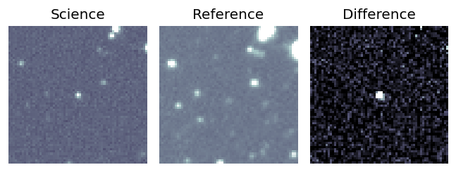
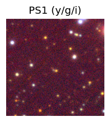

TESS: Sectors [54 81]
PS1: 1 source in 3 arcsec Closest: d = 2.65 arcsec photoz=0.88+/-0.22 peak abs mag = -27.43
LegacySurvey: 0 sources in 3 arcsec
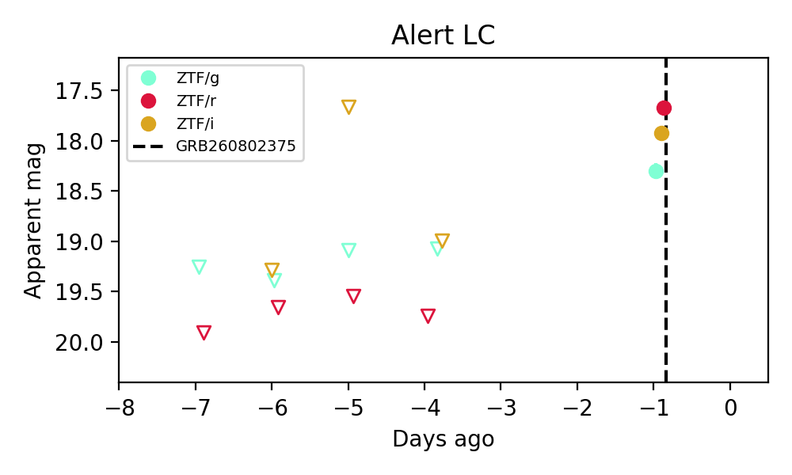
Extinction-corrected gr color:
From alerts: -0.31 +/- 0.12 mag
Extinction-corrected gi color:
From alerts: -0.6 +/- 0.13 mag
Extinction-corrected ri color:
From alerts: -0.37 +/- 0.12 mag
Rise Rate:
g: 0.27 mag/day
Fade Rate:
g: 0.14 mag/day
r: 0.21 mag/day
i: 0.14 mag/day
1. [ZTF] ZTF26ablrygn (Afterglow?) [Back to Top] [Share] [Trigger Swift] [Fritz Alert] [Fritz Source] [Lasair]RA, Dec: 327.96568, 41.81727 21h51m51.76s, 41d49m2.15sGalactic (l, b): 90.69655, -9.54674 ext(g-r) = 0.373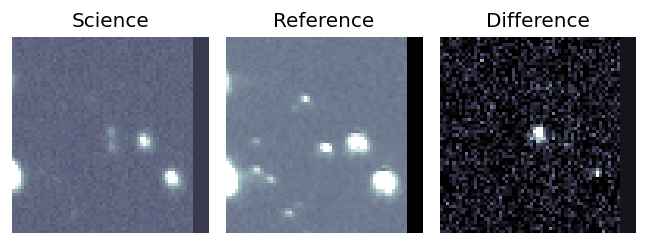
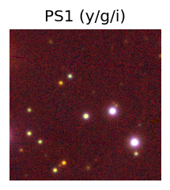

TESS: Sectors [ 15 16 56 83 121]
PS1: 0 sources in 3 arcsec
LegacySurvey: 0 sources in 3 arcsec
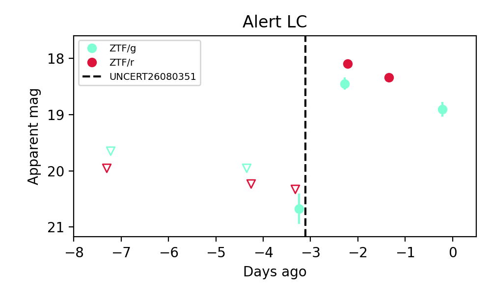
Extinction-corrected gr color:
From alerts: -0.32 +/- 0.15 mag
Rise Rate:
g: 0.72 mag/day
r: 2.02 mag/day
Fade Rate:
r: 0.27 mag/day
2. [ZTF] ZTF26abmbedr (FBOT?) [Back to Top] [Share] [Trigger Swift] [Fritz Alert] [Fritz Source] [Lasair]RA, Dec: 1.12874, -6.36354 0h 4m30.90s, -6d-21m-48.76sGalactic (l, b): 92.58002, -66.42973 ext(g-r) = 0.044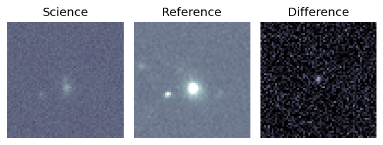
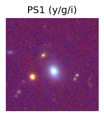
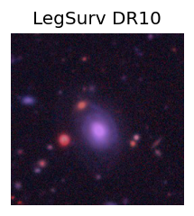
TESS: Sectors [42 70]
NED (10 arcsec):Found NED spec-z: z=0.09; peak abs mag = -18.98
PS1: 0 sources in 3 arcsec
LegacySurvey: 1 sources in 3 arcsec Closest: d = 1.63 arcsec, 348.9 deg (east of north) photoz=0.33 (68% bounds 0.18, 0.8), type=PSF peak abs mag = -21.87 (68% bounds -20.35, -24.18)
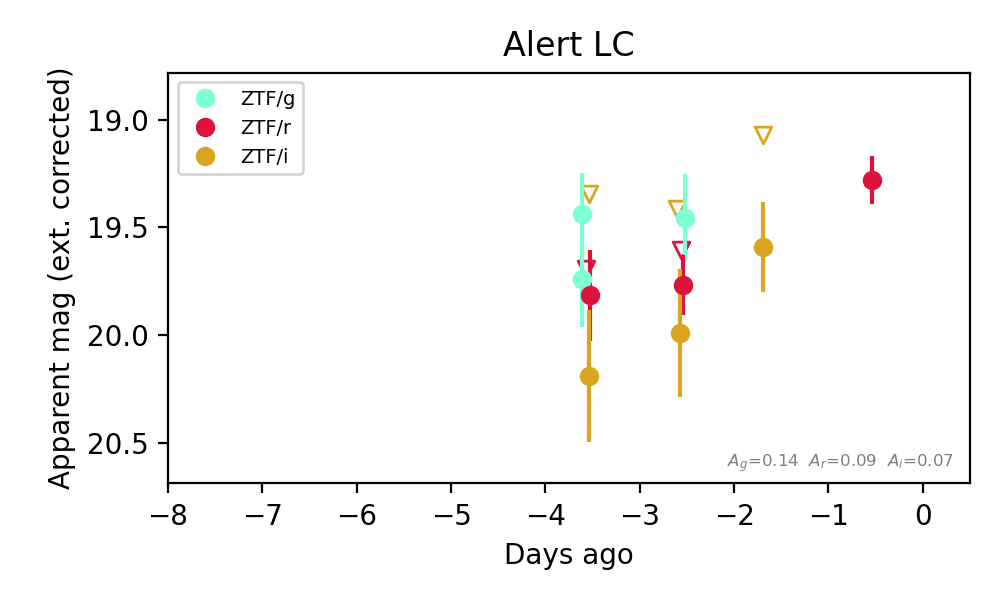
Extinction-corrected gr color:
From alerts: -0.31 +/- 0.24 mag
Extinction-corrected gi color:
From alerts: -0.53 +/- 0.36 mag
Extinction-corrected ri color:
From alerts: -0.22 +/- 0.33 mag
Consistent with synchrotron, g-r>0!
Rise Rate:
g: 0.12 mag/day
r: 0.21 mag/day
Fade Rate:
3. [ZTF] ZTF26abmabrc (FBOT?) [Back to Top] [Share] [Trigger Swift] [Fritz Alert] [Fritz Source] [Lasair]RA, Dec: 25.64318, -2.82362 1h42m34.36s, -2d-49m-25.04sGalactic (l, b): 151.83473, -62.78994 ext(g-r) = 0.024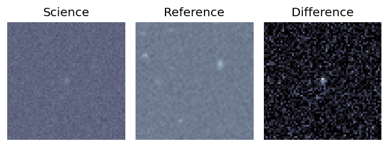
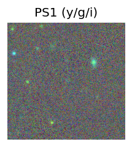
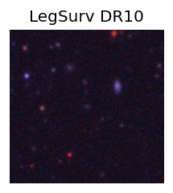
TESS: Sectors [ 3 30 70 97 108]
PS1: 0 sources in 3 arcsec
LegacySurvey: 1 sources in 3 arcsec Closest: d = 0.28 arcsec, 163.5 deg (east of north) photoz=0.39 (68% bounds 0.15, 0.94), type=EXP peak abs mag = -23.49 (68% bounds -21.22, -25.81)
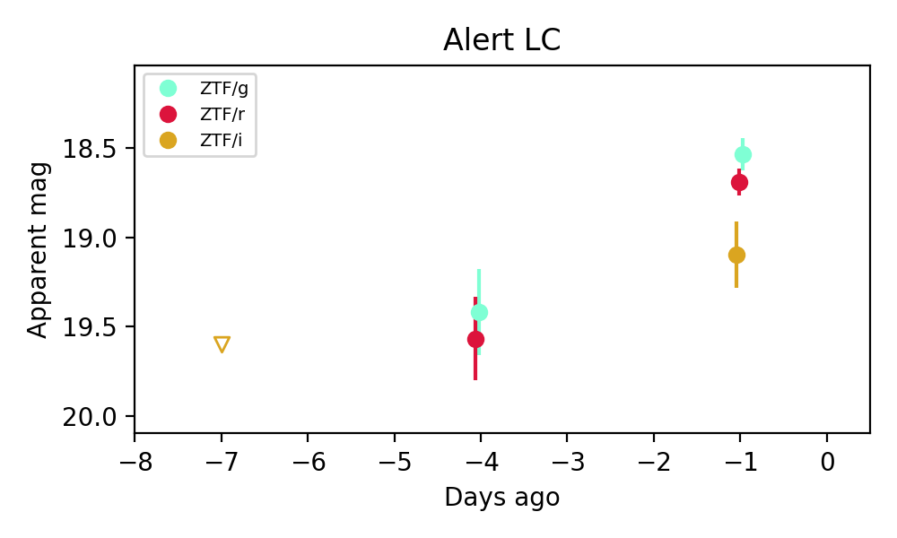
Extinction-corrected gr color:
From alerts: -0.32 +/- 0.11 mag
Extinction-corrected gi color:
From alerts: -0.6 +/- 0.21 mag
Extinction-corrected ri color:
From alerts: -0.42 +/- 0.2 mag
Rise Rate:
g: 0.24 mag/day
r: 0.16 mag/day
i: 0.08 mag/day
Fade Rate:
4. [ZTF] ZTF26abmgqrj (FBOT?) [Back to Top] [Share] [Trigger Swift] [Fritz Alert] [Fritz Source] [Lasair]RA, Dec: 17.73392, 5.2961 1h10m56.14s, 5d17m45.96sGalactic (l, b): 131.92632, -57.23475 WARNING: -2.06 deg from ecliptic plane ext(g-r) = 0.038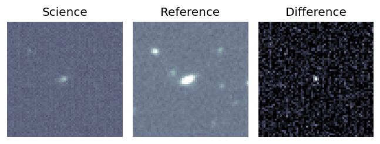
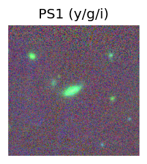
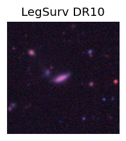
TESS: Sectors [42 43 70]
SDSS (<15 kpc):Found SDSS phot-z: z=0.14; peak abs mag = -19.82
PS1: 0 sources in 3 arcsec
LegacySurvey: 1 sources in 3 arcsec Closest: d = 1.28 arcsec, 114.1 deg (east of north) photoz=0.13 (68% bounds 0.12, 0.14), type=SER peak abs mag = -19.65 (68% bounds -19.39, -19.87)
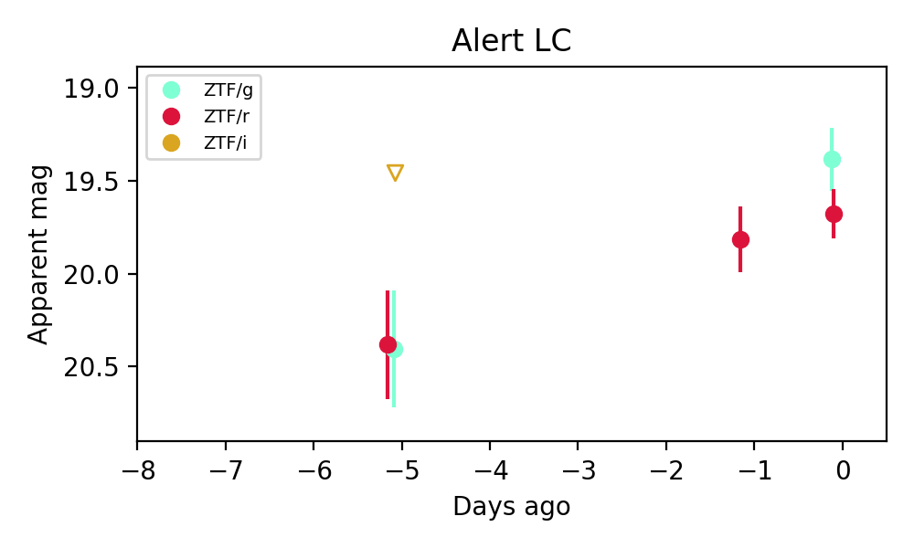
Extinction-corrected gr color:
From alerts: -0.33 +/- 0.22 mag
Extinction-corrected gi color:
From alerts: 0.89 +/- 99 mag
Extinction-corrected ri color:
From alerts: 0.9 +/- 99 mag
Rise Rate:
g: 0.21 mag/day
r: 0.14 mag/day
Fade Rate:
5. [ZTF] ZTF26abmhbho (Afterglow?) [Back to Top] [Share] [Trigger Swift] [Fritz Alert] [Fritz Source] [Lasair]RA, Dec: 209.99192, 7.08317 13h59m58.06s, 7d 4m59.40sGalactic (l, b): 345.10703, 64.18866 ext(g-r) = 0.027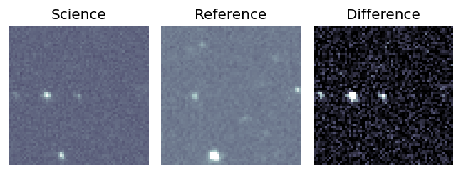
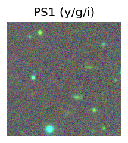
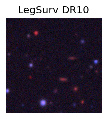
TESS: Sectors -1
PS1: 0 sources in 3 arcsec
LegacySurvey: 1 sources in 3 arcsec Closest: d = 4.61 arcsec, 109.9 deg (east of north) photoz=0.73 (68% bounds 0.6, 0.89), type=PSF peak abs mag = -24.77 (68% bounds -24.25, -25.3)
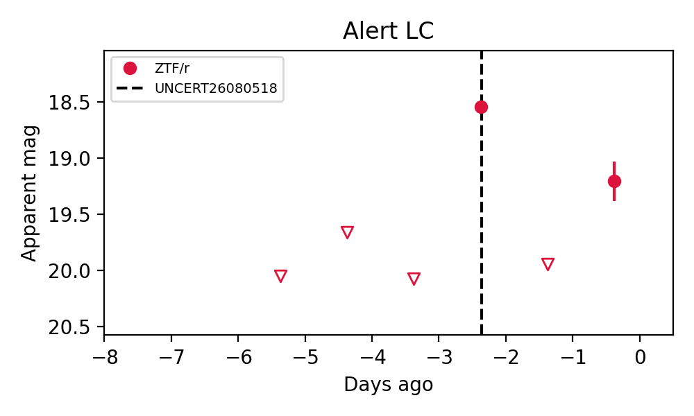
Rise Rate:
r: 1.54 mag/day
Fade Rate:
r: 1.4 mag/day
6. [ZTF] ZTF26abmhmuo (FBOT?) [Back to Top] [Share] [Trigger Swift] [Fritz Alert] [Fritz Source] [Lasair]RA, Dec: 305.82028, 12.06035 20h23m16.87s, 12d 3m37.28sGalactic (l, b): 54.71853, -14.13742 ext(g-r) = 0.166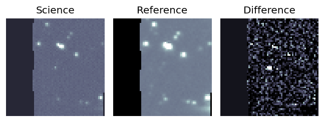
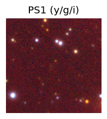

TESS: Sectors [54 81]
PS1: 1 source in 3 arcsec Closest: d = 2.02 arcsec photoz=0.63+/-0.67 peak abs mag = -23.42
LegacySurvey: 0 sources in 3 arcsec
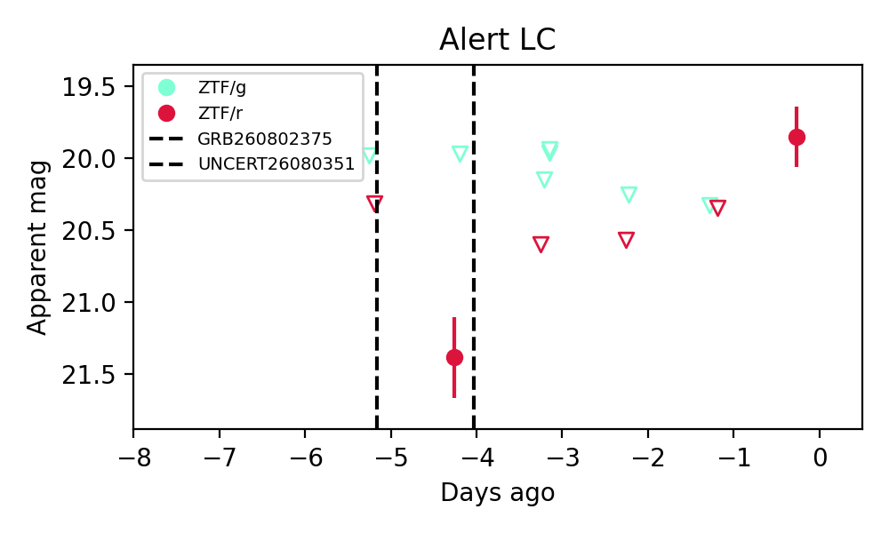
Extinction-corrected gr color:
From alerts: -1.58 +/- 99 mag
Rise Rate:
r: 0.54 mag/day
Fade Rate:
7. [ZTF] ZTF26abmhvvj (FBOT?) [Back to Top] [Share] [Trigger Swift] [Fritz Alert] [Fritz Source] [Lasair]RA, Dec: 299.47208, 10.00161 19h57m53.30s, 10d 0m5.79sGalactic (l, b): 49.62251, -9.86845 ext(g-r) = 0.318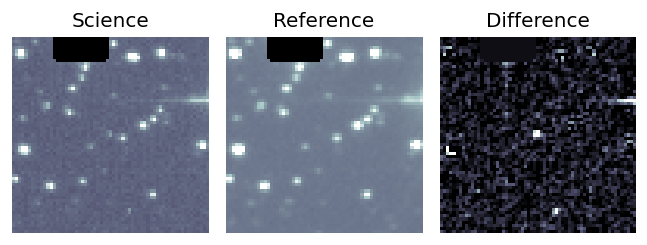
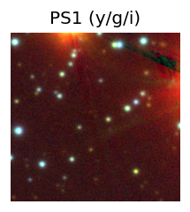

TESS: Sectors [54 81]
PS1: 1 source in 3 arcsec Closest: d = 2.60 arcsec photoz=1.09+/-0.04 peak abs mag = -25.20
LegacySurvey: 0 sources in 3 arcsec
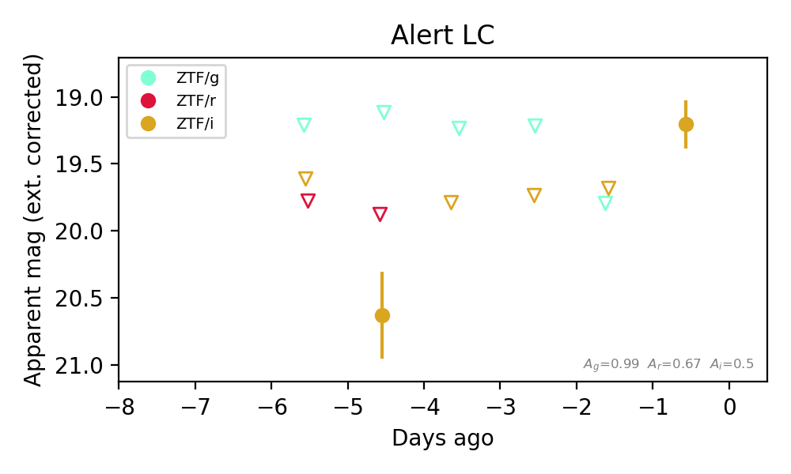
Extinction-corrected gi color:
From alerts: -1.51 +/- 99 mag
Extinction-corrected ri color:
From alerts: -0.75 +/- 99 mag
Rise Rate:
i: 0.47 mag/day
Fade Rate:
8. [ZTF] ZTF26abmhvwn (FBOT?) [Back to Top] [Share] [Trigger Swift] [Fritz Alert] [Fritz Source] [Lasair]RA, Dec: 298.75363, 14.44456 19h55m0.87s, 14d26m40.41sGalactic (l, b): 53.14567, -7.02408 ext(g-r) = 0.304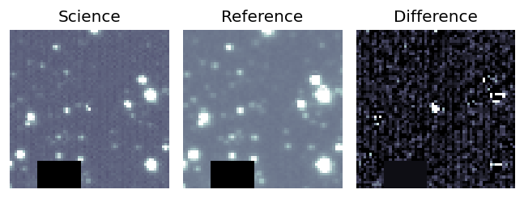
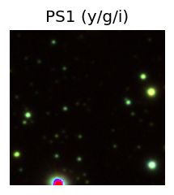

TESS: Sectors 54
PS1: 1 source in 3 arcsec Closest: d = 1.00 arcsec photoz=0.17+/-0.08 peak abs mag = -22.17
LegacySurvey: 0 sources in 3 arcsec
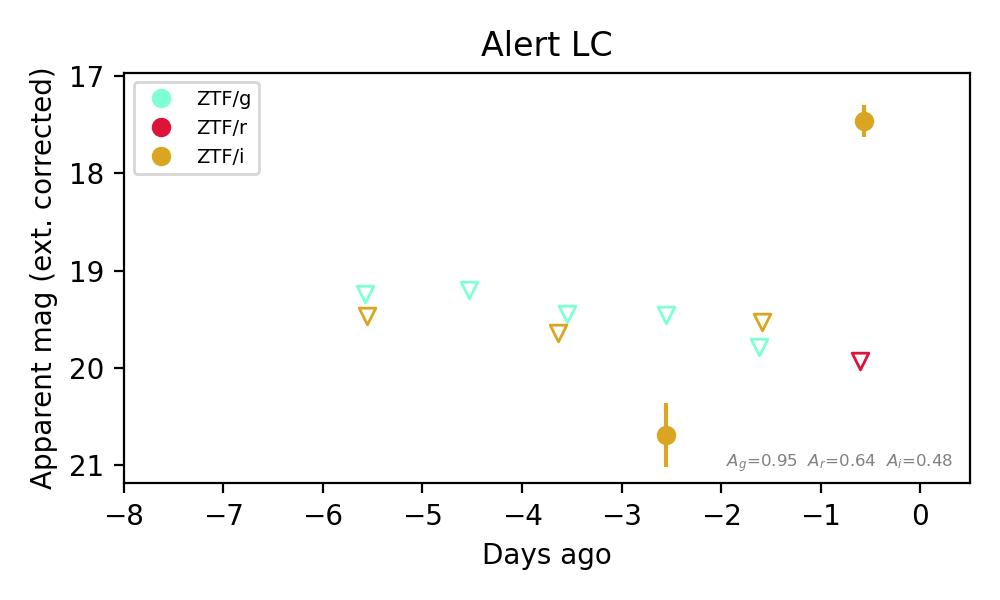
Extinction-corrected gi color:
From alerts: -1.23 +/- 99 mag
Extinction-corrected ri color:
From alerts: 2.46 +/- 99 mag
Rise Rate:
i: 2.02 mag/day
Fade Rate:
9. [ZTF] ZTF26abmiews (FBOT?) [Back to Top] [Share] [Trigger Swift] [Fritz Alert] [Fritz Source] [Lasair]RA, Dec: 294.95067, 8.15829 19h39m48.16s, 8d 9m29.85sGalactic (l, b): 45.78473, -6.88227 ext(g-r) = 0.346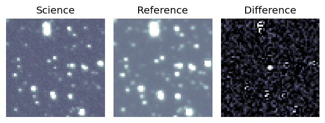
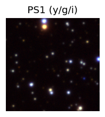

TESS: Sectors [54 81]
PS1: 1 source in 3 arcsec Closest: d = 3.49 arcsec photoz=0.24+/-0.05 peak abs mag = -22.05
LegacySurvey: 0 sources in 3 arcsec
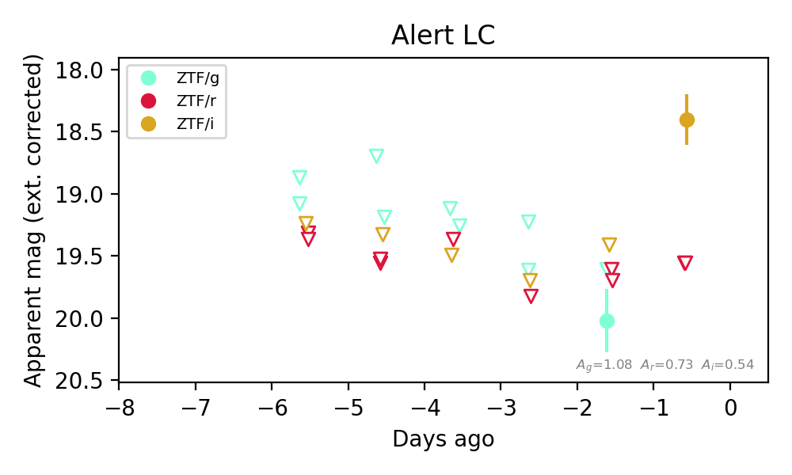
Extinction-corrected gr color:
From alerts: 0.32 +/- 99 mag
Extinction-corrected gi color:
From alerts: 0.61 +/- 99 mag
Extinction-corrected ri color:
From alerts: 1.15 +/- 99 mag
Rise Rate:
i: 0.99 mag/day
Fade Rate:
10. [ZTF] ZTF26abmiytv (FBOT?) [Back to Top] [Share] [Trigger Swift] [Fritz Alert] [Fritz Source] [Lasair]RA, Dec: 335.61244, -2.88677 22h22m26.99s, -2d-53m-12.37sGalactic (l, b): 60.65676, -46.93047 ext(g-r) = 0.071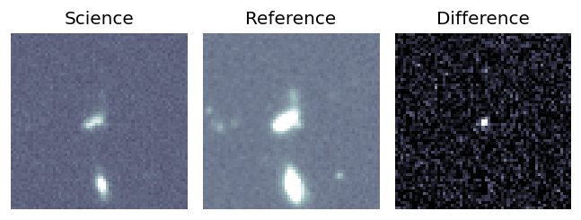
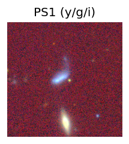
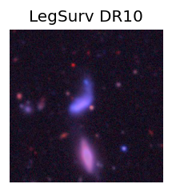
TESS: Sectors [42 55 92]
SDSS (<15 kpc):Found SDSS phot-z: z=0.02; peak abs mag = -15.64
PS1: 0 sources in 3 arcsec
LegacySurvey: 1 sources in 3 arcsec Closest: d = 2.37 arcsec, 250.0 deg (east of north) photoz=0.17 (68% bounds 0.14, 0.22), type=SER peak abs mag = -20.1 (68% bounds -19.66, -20.69)
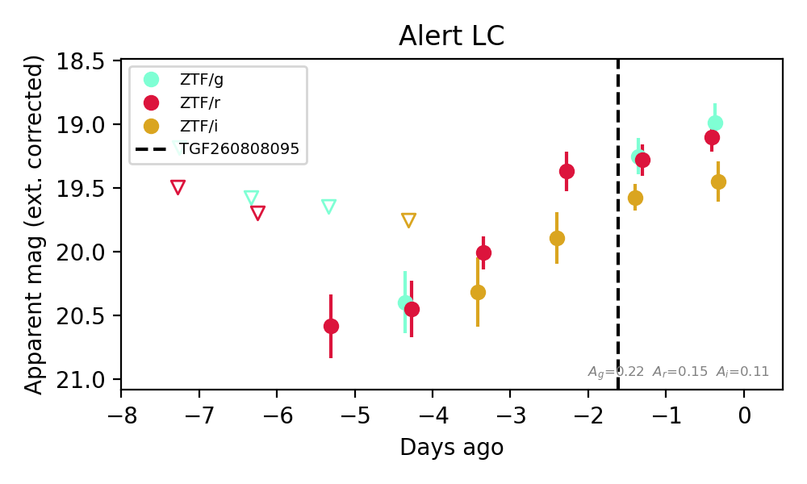
Extinction-corrected gr color:
From alerts: -0.05 +/- 0.33 mag
Extinction-corrected gi color:
From alerts: 0.64 +/- 99 mag
Extinction-corrected ri color:
From alerts: -0.52 +/- 0.25 mag
Consistent with synchrotron, g-r>0!
Rise Rate:
r: 0.44 mag/day
Fade Rate:
11. [ZTF] ZTF26abmjviv (Afterglow?) [Back to Top] [Share] [Trigger Swift] [Fritz Alert] [Fritz Source] [Lasair]RA, Dec: 344.66258, 35.90372 22h58m39.02s, 35d54m13.38sGalactic (l, b): 98.62628, -21.58888 ext(g-r) = 0.099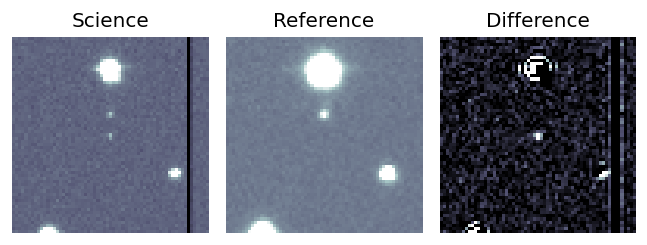
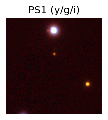

TESS: Sectors [16 56 83]
PS1: 1 source in 3 arcsec Closest: d = 7.02 arcsec photoz=0.73+/-0.20 peak abs mag = -25.91
LegacySurvey: 0 sources in 3 arcsec
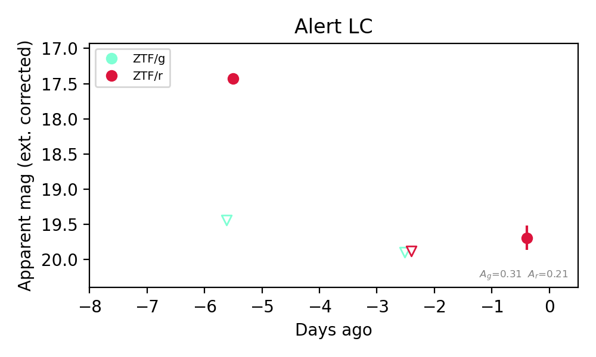
Extinction-corrected gr color:
From alerts: 2.02 +/- 99 mag
Rise Rate:
r: 0.44 mag/day
Fade Rate:
r: 0.79 mag/day
12. [ZTF] ZTF26abmjwyw (Afterglow?) [Back to Top] [Share] [Trigger Swift] [Fritz Alert] [Fritz Source] [Lasair]RA, Dec: 351.53461, 3.31473 23h26m8.31s, 3d18m53.03sGalactic (l, b): 85.57074, -53.25456 ext(g-r) = 0.077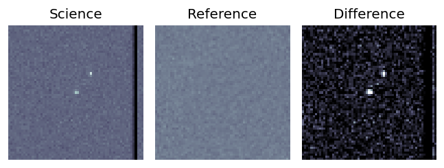
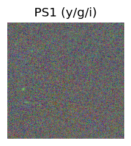
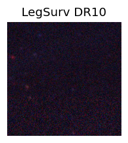
TESS: Sectors [42 70 92]
PS1: 0 sources in 3 arcsec
LegacySurvey: 1 sources in 3 arcsec Closest: d = 8.47 arcsec, 218.7 deg (east of north) photoz=0.78 (68% bounds 0.57, 1.04), type=PSF peak abs mag = -25.37 (68% bounds -24.55, -26.15)
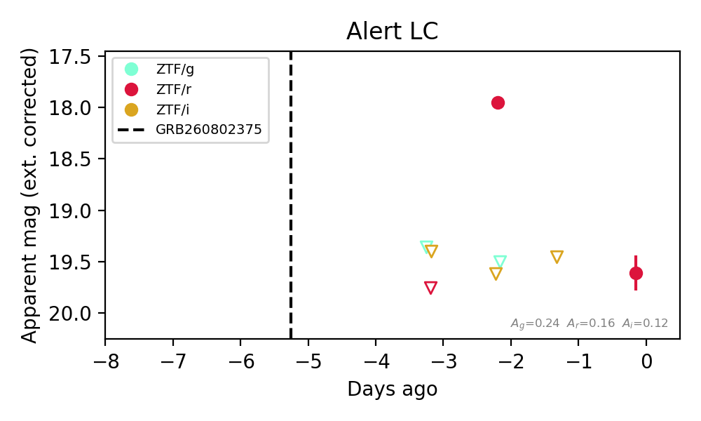
Extinction-corrected gr color:
From alerts: 1.55 +/- 99 mag
Extinction-corrected ri color:
From alerts: -1.67 +/- 99 mag
Rise Rate:
r: 1.83 mag/day
Fade Rate:
r: 0.81 mag/day